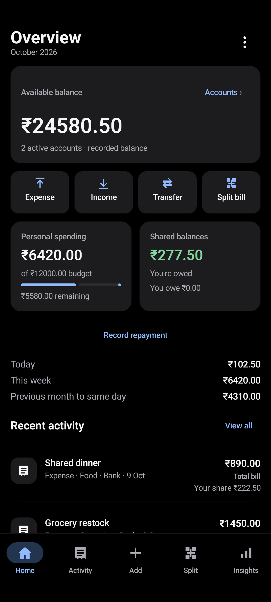
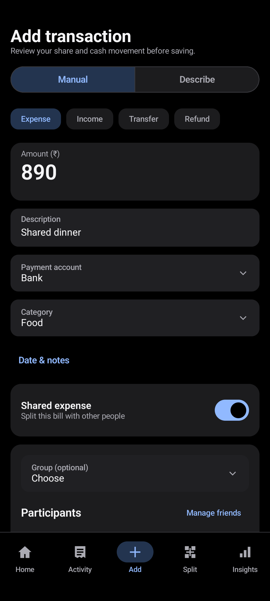
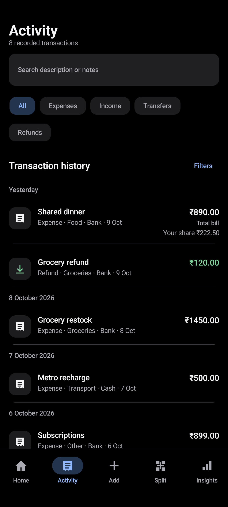
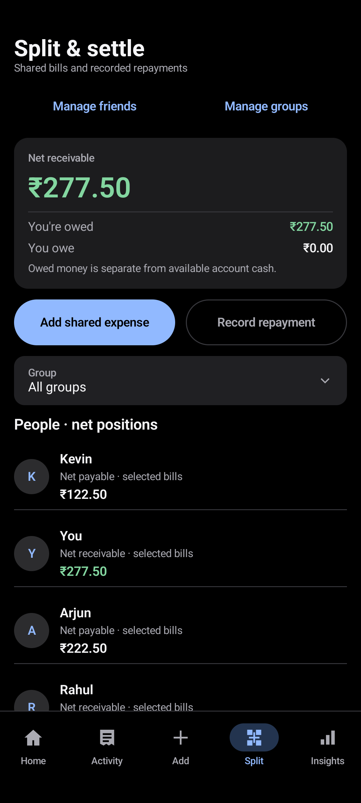
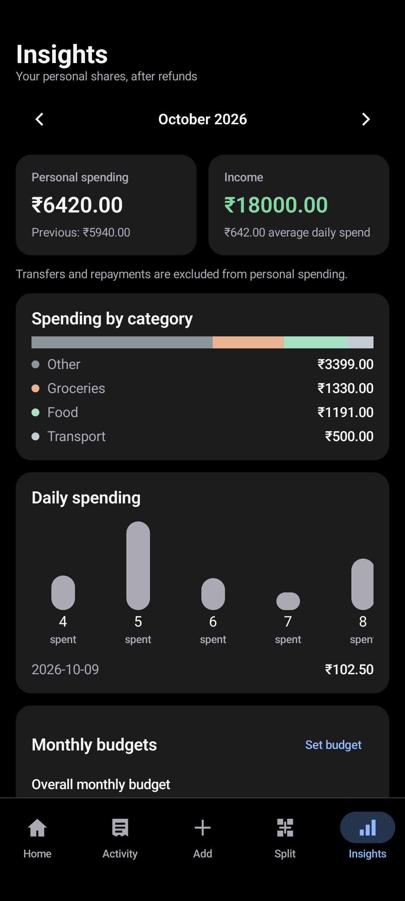

Actual Android screens from the implemented Stitch redesign. These previews use isolated fictional data; the installed app starts with your own accounts and transactions.
Stitch project · Design system





Layout references: Splitwise, Wallet, and Spendee. The visual design uses an original mint and graphite palette, bundled Plus Jakarta Sans, and a pure black AMOLED background.